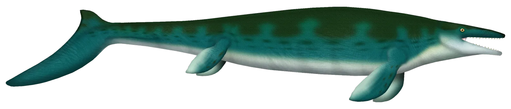
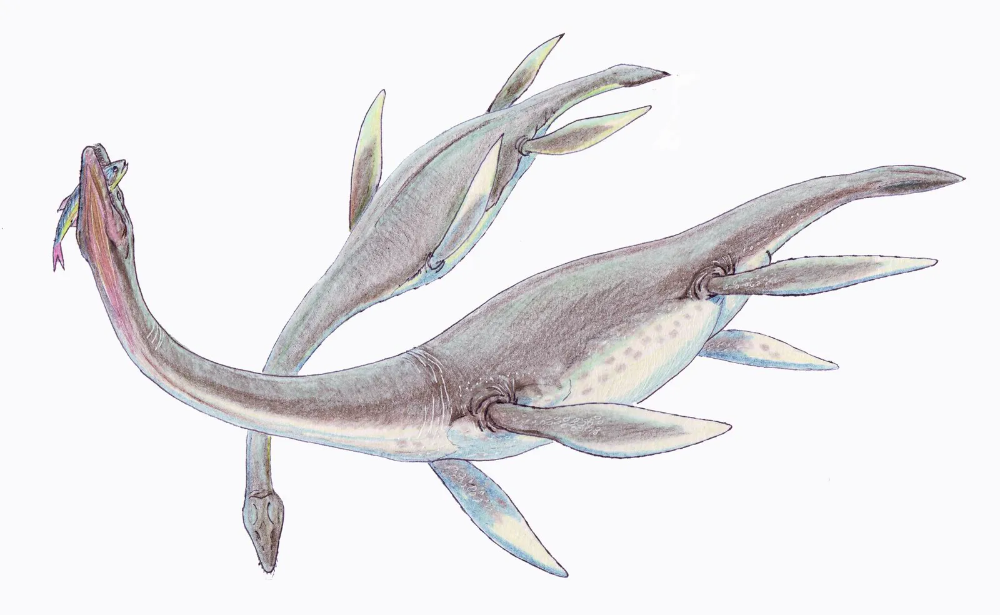

Mosasaurus Mosasaurus hoffmannii lived in the Campanian and Maastrichtian. On the Paleobiology Database timescale used here, the oldest bin starts at 83.6 million years ago, and most records are Late Maastrichtian. The Maastrichtian ends at the close of the Cretaceous, about 66 million years ago. The animal did not live after that. The same list stores a younger bin edge at 61.66 million years. That edge is later than the end of the Cretaceous. It is a bin boundary, not a last day of life, and this site does not use it as the animal's age. The picture is a skull photographed at the Teylers Museum in Haarlem.
Life restoration. UnexpectedDinoLesson, CC BY 4.0, via Wikimedia Commons. Artist’s drawing, not a photograph. The file on this site is 2800 × 600. This card serves 1600 × 342 and 800 × 172, not enlarged. File page · Fossil. Ghedoghedo, CC BY-SA 4.0, via Wikimedia Commons. The original file is 4000 pixels wide. This page serves 1920 pixels wide, not enlarged. File page · Source: Paleobiology Database occurrences of Mosasaurus hoffmannii, with time bins.
Dunkleosteus An armored fish from the Cleveland Shale, about 360 million years ago, near the end of the Devonian. The skull and belly armor in the picture are real. Some side plates are rebuilt.
Life restoration. PlacodermReconstructions, CC BY 4.0, via Wikimedia Commons. Artist’s concept. File page · Fossil. Russell K. Engelman, CC BY-SA 4.0, via Wikimedia Commons. The original file is 1730 pixels wide. This page serves 1730 pixels wide. File page · Source: Dunkleosteus armor (Engelman, 2024). Linked from this site’s coin.
Otodus megalodon A giant shark. Boessenecker and others, 2019, record it from middle Miocene rocks through the early Pliocene, and put the extinction at about 3.6 million years ago. The teeth in the picture are from the Capistrano Formation. That paper’s corrected age for this set is 5.6 to 3.7 million years.
Life restoration. Oliver E. Demuth, CC BY 4.0, via Wikimedia Commons. Artist’s life restoration, not a photograph. The original file is 1970 pixels wide. This card serves 1600, not enlarged. File page · Fossil. Robert W. Boessenecker, Dana J. Ehret, Douglas J. Long, Morgan Churchill, Evan Martin, Sarah J. Boessenecker, CC BY 4.0, via Wikimedia Commons. The original file is 2708 pixels wide. This page serves 1920 pixels wide, not enlarged. File page · Source: Boessenecker and others, 2019, PeerJ.

Plesiosaurus Plesiosaurus dolichodeirus. A Paleobiology Database occurrence of the type is labeled Late Sinemurian. The same list stores that label on the Sinemurian bin, 199.5 to 192.9 million years ago. Those numbers are the whole Sinemurian stage on this timescale, not a measured span of only the late part. Mary Anning found the first articulated skeleton (Natural History Museum, London). The picture is a historical figure of a Lower Lias skeleton.
Life restoration. Dmitry Bogdanov, CC BY-SA 3.0, via Wikimedia Commons. Artist’s drawing, not a photograph. The file on this site is 1800 × 1106. This card serves 1600 × 984 and 800 × 492, not enlarged. File page · Fossil. J. Dinkel, Public domain, via Wikimedia Commons. The original file is 3505 pixels wide. This page serves 1920 pixels wide, not enlarged. File page · Source: Paleobiology Database occurrences of Plesiosaurus dolichodeirus. The Natural History Museum page is the second link. · Source: Natural History Museum, London: Mary Anning’s plesiosaur.
Ichthyosaurus Ichthyosaurus communis. Paleobiology Database rows filed under this name carry stage labels from the Rhaetian through the Early Pliensbachian. The oldest early edge in that list is 205.7 million years ago. One coarse bin is labeled Early Jurassic and ends at 174.7. That 174.7 edge is the end of the Early Jurassic on this timescale, not the end of the Early Pliensbachian. The Early Pliensbachian row in the same list ends at 184.2. The picture is the Lyme Regis skull on the Jurassic Coast coin. The slider uses 196, inside the Sinemurian numbers, not a single measured year.
Life restoration. Nobu Tamura, CC BY 3.0, via Wikimedia Commons. Artist’s illustration. File page · Fossil. James St. John, CC BY 2.0, via Wikimedia Commons. The original file is 3601 pixels wide. This page serves 1920 pixels wide, not enlarged. File page · Source: Paleobiology Database occurrences of Ichthyosaurus communis, with time bins.
Anomalocaris A top hunter in the Burgess Shale. The Royal Ontario Museum dates Anomalocaris canadensis to the Wuliuan stage of the Middle Cambrian, about 505 million years ago. The picture is a museum model of that Burgess Shale species, not the Kangaroo Island animal.
Life restoration. Matteo De Stefano / MUSE, Science Museum of Trento, CC BY-SA 3.0, via Wikimedia Commons. Photo of a model. File page · Fossil. Esv, CC BY-SA 3.0, via Wikimedia Commons. The original file is 1600 pixels wide. This page serves 1600 pixels wide. File page · Source: Royal Ontario Museum: Anomalocaris canadensis, Wuliuan, about 505 million years ago.
Sirius Passet An Early Cambrian seafloor in north Greenland, about 518 million years ago.
Life restoration. Rebecca Gelernter, CC BY 4.0, via Wikimedia Commons. Artist’s concept from Park and others, 2018. File page · Fossil. David A. T. Harper, Emma U. Hammarlund, Timothy P. Topper, Arne T. Nielsen, Jan A. Rasmussen, Tae-Yoon S. Park and M. Paul Smith, CC BY 4.0, via Wikimedia Commons. The original file is 1073 pixels wide. This page serves 1073 pixels wide. File page · Source: Sirius Passet review (Harper and others, 2019). Linked from this site’s coin.
Aegirocassis A giant filter-feeder from the Early Ordovician seafloor near Zagora, about 478 million years ago.
Life restoration. Junnn11, CC BY-SA 4.0, via Wikimedia Commons. Artist’s concept. File page · Fossil. Cédric Aria, CC BY 4.0, via Wikimedia Commons. The original file is 1036 pixels wide. This page serves 1036 pixels wide. File page · Source: Giant filter-feeder Aegirocassis (Van Roy, Daley, and Briggs, 2015). Linked from this site’s coin.
Materpiscis A reef fish from the Gogo Formation, about 380 million years ago, preserved with an embryo. The picture is a museum model, not the fossil.
Life restoration. Sularko, CC BY-SA 3.0, via Wikimedia Commons. Artist’s concept. File page · Fossil. Sularko, CC BY-SA 3.0, via Wikimedia Commons. The original file is 3648 pixels wide. This page serves 1920 pixels wide, not enlarged. File page · Source: Long and others, 2008, Nature. Linked from this site’s coin.
Capitan Reef A Middle Permian reef in Texas, about 265 to 260 million years ago.
Life restoration. Kenneth Carpenter, CC BY-SA 4.0, via Wikimedia Commons. Photo of a National Park Service diorama. File page · Fossil. Carpenter, Kenneth, CC BY-SA 4.0, via Wikimedia Commons. The original file is 4681 pixels wide. This page serves 1920 pixels wide, not enlarged. File page · Source: National Park Service: geologic formations. Linked from this site’s coin.
Monte San Giorgio A Middle Triassic sea, about 245 to 230 million years ago. The coin names sea reptiles, fish, and ammonites. The picture is Tanystropheus.
Life restoration. Nobu Tamura, CC BY-SA 4.0, via Wikimedia Commons. Artist’s illustration. File page · Fossil. Ghedoghedo, CC BY-SA 3.0, via Wikimedia Commons. The original file is 3244 pixels wide. This page serves 1920 pixels wide, not enlarged. File page · Source: UNESCO World Heritage: Monte San Giorgio. Linked from this site’s coin.
Emu Bay Shale A fossil discovery assemblage, not one animal. An Early Cambrian shale on Kangaroo Island, about 514 million years ago. The picture is a fossil from that shale, not a living animal.
UNE Photos, CC BY 2.0, via Wikimedia Commons. The original file is 3187 pixels wide. This page serves 1920 pixels wide, not enlarged. File page · Source: Fossil eyes of Anomalocaris (Paterson and others, 2011). Linked from this site’s coin.
Falls of the Ohio A fossil discovery assemblage, not one species. Horn corals and other animals in a Middle Devonian seafloor in Indiana, about 390 million years ago. The picture is the fossil rock, not a living animal.
James St. John, CC BY 2.0, via Wikimedia Commons. The original file is 3252 pixels wide. This page serves 1920 pixels wide, not enlarged. File page · Source: Falls of the Ohio visitor site. The age, about 390 million years, is the one stated on this site’s coin.
Wadi Al-Hitan Whales that still had hind legs, from the Late Eocene of Egypt, about 40 to 37 million years ago. The picture is a fossil jaw. This card has no living restoration.
Tom Horton from Shanghai, China, CC BY-SA 2.0, via Wikimedia Commons. The original file is 2736 pixels wide. This page serves 1920 pixels wide, not enlarged. File page · Source: UNESCO World Heritage: Wadi Al-Hitan (Whale Valley). Linked from this site’s coin.


.png){kind=link}